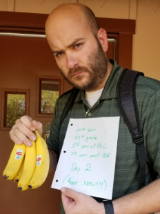
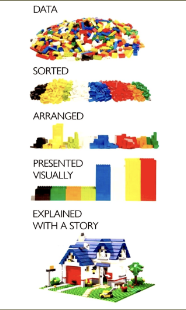

Classes Taught
Introduction to Sociology At the heart of every interaction lies power. When talking with your parents, when contacting governmental authorities, even when putting your trash out on the curb, power dynamics are at play. Throughout this course we will examine how power is created, used, maintained, and lost.
Common questions that will be on our minds will include: Who wins in society? Who establishes the rules of society? How does race/gender/sexual orientation/religion influence your power? What is justice and how can we live lives that reach a “just” end? Together, we will examine society’s powerful and weak and attempt to better understand our place in this society and answer one of our most pressing questions: How did I get here?
Social Statistics Every day, you are inundated with statistics. Statistics are used to support, reject, or even morally justify any number of actions. Statistics is the common language of science, but it also bleeds into the “ordinary” world. For this reason, we need to know how statistics are used and how they are misused.
The primary goal of this course is to help you develop the knowledge to not only interpret statistics wisely, but to produce them yourself. Like all scientists, social scientists engage in the research process: asking research questions, formulating hypotheses, collecting and analyzing data, and evaluating our hypotheses in light of this data analysis. In this course we will learn about the different statistical tools at our disposal and learn to ask and answer questions about social phenomena.